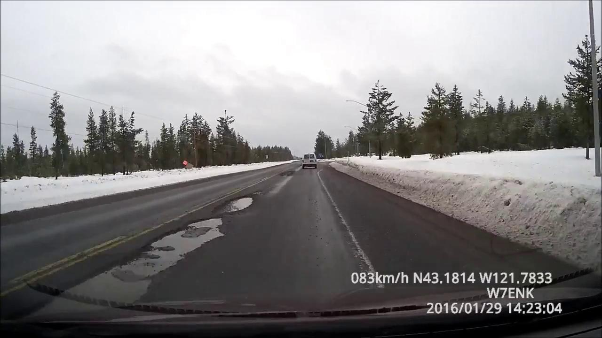
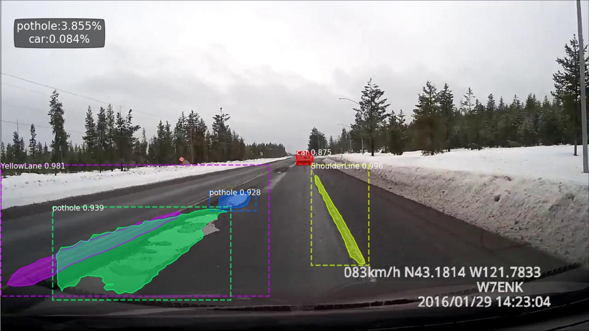

Mask R-CNN 結果檢視
道路場景 Instance Segmentation 結果展示
以 input / output 對照呈現道路影像的 Mask R-CNN 結果，並將 mask pixels 轉換為 pothole 與 car 的 area percentage，讓視覺化結果同時具備量化指標。
視覺對照
Input frame 與 mask overlay
道路影像 1280 × 720
Input image
原始影像
Inference output
mask overlay
pothole 面積比例
3.855%
由 pothole mask pixels / image pixels 計算
car 面積比例
0.084%
用於估計畫面中車輛占比
偵測類別數
5
RoadLane, ShoulderLine, YellowLane, car, pothole
流程
專案流程
01Labelme JSON
02Preprocessing 前處理
03Dataset Audit
04Mask R-CNN Inference
05Mask Area 統計